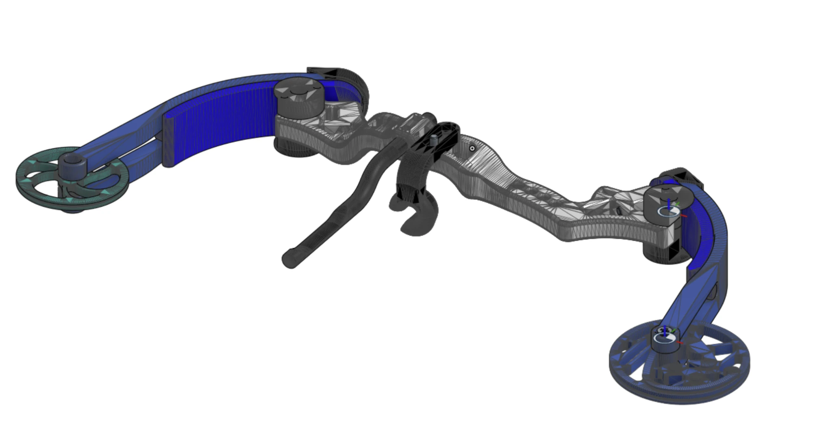
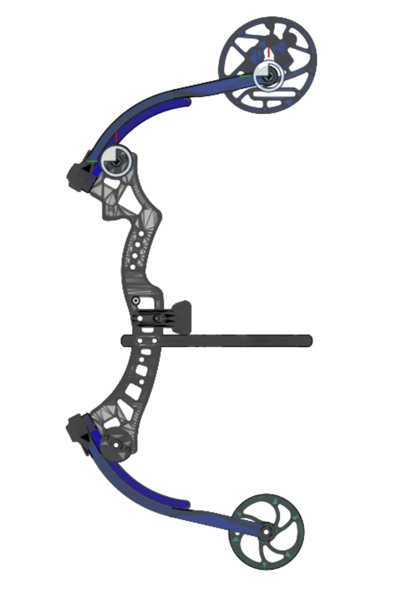
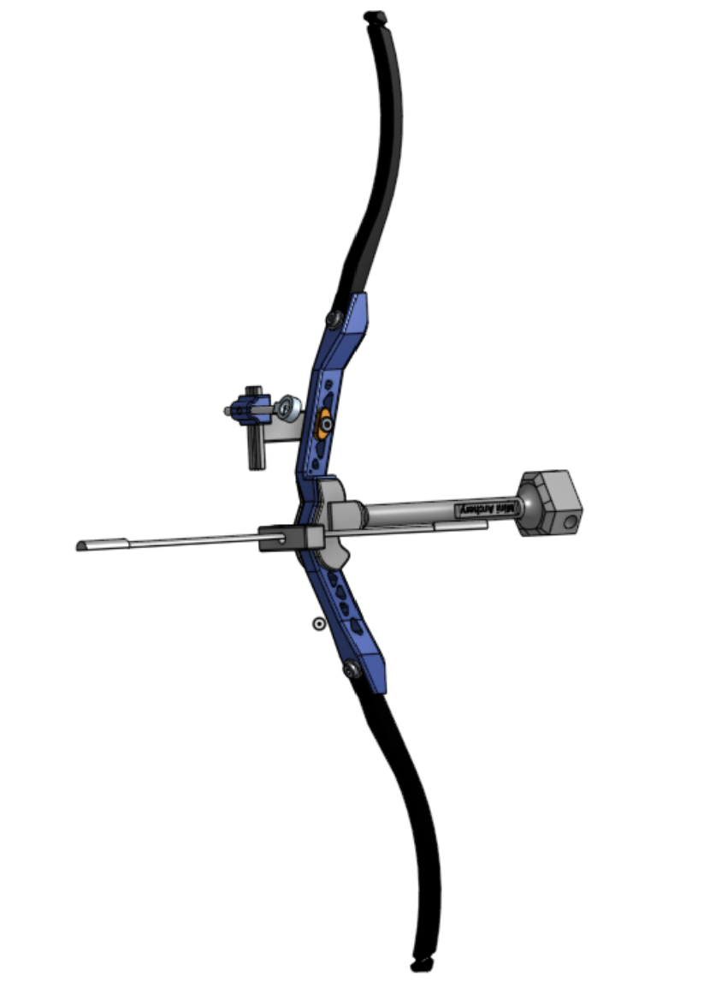
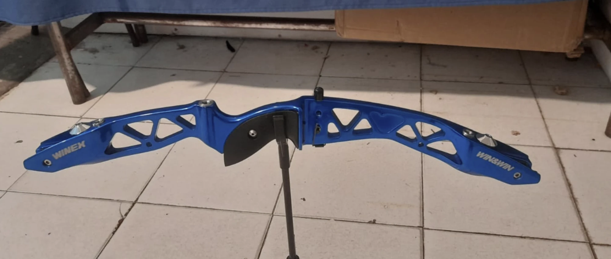

2022 · Impresión 3D · Diseño mecánico
Arcos impresos en 3D para un torneo de arquería
Un amigo participó en un torneo de arquería. Con un grupo de amigos decidimos llevar al evento arcos a escala y llaveros. Todos funcionales: usaban brochetas como flechas. Mostramos dos tipos de arco y cada uno planteó un problema distinto: en los compuestos había que arreglar un diseño ajeno, y en el recurvo había que crear uno desde cero.
Arcos compuestos: mejorar un diseño que no era nuestro
Los arcos compuestos no los diseñamos nosotros: los modelos los sacamos de internet. Tampoco los vendimos. Lo que hicimos fue modificarlos para mejorar su desempeño.

Qué tiene de particular un arco compuesto
A diferencia de un arco recurvo, el compuesto lleva poleas (levas) en la punta de cada pala. En las imágenes son las ruedas caladas de los extremos. El cable pasa por ellas y, al abrir el arco, la geometría de la polea hace que la fuerza que hay que sostener al final de la apertura baje, aunque las palas estén muy cargadas. Es más mecanismo, más piezas y más lugares donde algo puede fallar.

El problema: se rompía
El diseño original era muy frágil y propenso a partirse. No hubo ningún cálculo detrás de la solución: fue prueba, error y mejora. Imprimíamos, tensábamos, veíamos por dónde se rompía y corregíamos esa zona en la siguiente versión. Así llegamos a dos cambios: engrosar las palas y modificar el cuerpo.
Una pieza impresa por capas se rompe justo donde es fina o tiene una esquina marcada, y engrosarla la hace más resistente. Pero también más dura: una pala más gruesa es más difícil de abrir. Encontrar ese equilibrio fue cuestión de probar versiones hasta que el arco aguantara sin volverse imposible de tensar.
El recurvo: un diseño enteramente propio
El recurvo sí es un diseño completamente nuestro. Es una escala de un arco comercial de competición: elegimos un modelo real y lo reprodujimos en CAD con sus proporciones y sus detalles.


Comparando ambas imágenes se reconocen las decisiones de diseño: el cuerpo azul con sus aligeramientos triangulares, la forma curva del cuerpo y la zona de la empuñadura. El cuerpo comercial es de aluminio mecanizado; el nuestro tuvo que resolver lo mismo en plástico impreso.
Qué lleva un recurvo de competición
Nuestro modelo no es solo el cuerpo y las palas. Le agregamos los accesorios que definen a un arco de competición:
| Pieza | Para qué sirve |
|---|---|
| Cuerpo (riser) | La parte central: se sostiene con la mano y sostiene las palas. |
| Palas (limbs) | Son las que se flexionan y almacenan la energía. En un recurvo las puntas se curvan hacia adelante, y de ahí el nombre. |
| Mira | El accesorio con el que se apunta. Se ve como la pieza chica en un lateral del cuerpo. |
| Contrapeso (estabilizador) | La barra larga con masa en la punta. Al alejar peso de la mano reduce el giro del arco al soltar la cuerda. |
| Base de apoyo | Permite que el arco se apoye parado sin tener que sostenerlo, como en la foto del arco comercial. |
Materiales
Combiné PLA y PETG según lo que le exigía cada pieza. Las partes que se deforman en uso, como las que trabajan flexionando, van en PETG, más elástico y dúctil. Las piezas rígidas van en PLA. Elegir el material y el espesor de cada pieza según cómo trabaja fue parte central del aprendizaje.
Qué me llevé
- Modificar un diseño ajeno es una habilidad distinta de diseñar uno propio. En el compuesto hubo que entender por qué falla algo que no hice yo; en el recurvo, tomar todas las decisiones.
- Iterar funciona: imprimir, romper, mirar dónde falló y corregir enseñó más sobre piezas impresas que cualquier teoría. El espesor y las esquinas importan tanto como el material.
- Este proyecto mejoró mucho mis habilidades de diseño 3D.